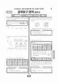

문제지

2023학년도 6월 모의평가 · 2022년 6월 시행
2023학년도 6모 과학탐구 화학Ⅱ 1등급컷은 원점수 43점(추정), 표준점수 최고점은 78점입니다.
원점수 1등급컷은 공식 발표값이 아니라 EBSi·입시기관 값입니다. 등급별 값은 등급컷 표, 출처 구분은 데이터 원칙에 있습니다.

시험지를 먼저 풀어 보세요. 등급컷·표준점수·난이도는 흐리게 가려 뒀어요.
| 등급 | 원점수 | 표준점수 | 백분위 | 누적 |
|---|---|---|---|---|
| 1 | 43 | 72 | 96 | 4.01% |
| 2 | 35 | 65 | 88 | 13.06% |
| 3 | 27 | 58 | 77 | 23.73% |
| 4 | 17 | 49 | 60 | 41.14% |
| 5 | 12 | 45 | 44 | 62.09% |
| 6 | 10 | 43 | 27 | 79.47% |
| 7 | 7 | 40 | 10 | 92.37% |
| 8 | 5 | 39 | 6 | 96.52% |
등급별 컷 · 입시기관 3곳 원점수 추정 종합(EBSi·메가스터디·이투스) · 만점 50점
한국교육과정평가원이 교육부 보도자료로 공개한 표준점수 도수분포로 계산했습니다.
EBSi 응답자 기준으로 가장 많이 틀린 문항은 20번(3점)이고, 오답률은 75.9%입니다. 오답률 50%를 넘은 문항은 9개입니다.
| 순위 | 문항 | 배점 | 오답률 | 정답 | 많이 고른 오답 |
|---|---|---|---|---|---|
| 1 | 20번 | 3점 | 75.9% | ② | ④ 24.1% |
| 2 | 16번 | 2점 | 70.9% | ⑤ | ④ 27.7% |
| 3 | 14번 | 3점 | 70.9% | ④ | ② 26.2% |
| 4 | 19번 | 3점 | 70.2% | ④ | ⑤ 20.6% |
| 5 | 17번 | 3점 | 53.9% | ④ | ③ 15.6% |
| 6 | 18번 | 2점 | 52.5% | ③ | ⑤ 17% |
| 7 | 13번 | 3점 | 51.1% | ③ | ④ 18.4% |
| 8 | 15번 | 2점 | 50.4% | ① | ⑤ 16.3% |
| 9 | 12번 | 2점 | 50.4% | ⑤ | ④ 21.3% |
| 10 | 10번 | 3점 | 48.9% | ③ | ④ 16.3% |
| 11 | 11번 | 2점 | 44% | ④ | ③ 18.4% |
| 12 | 6번 | 3점 | 43.3% | ② | ⑤ 14.9% |
| 13 | 9번 | 3점 | 40.4% | ① | ③ 12.1% |
| 14 | 8번 | 2점 | 40.4% | ⑤ | ③ 16.3% |
| 15 | 4번 | 2점 | 38.3% | ④ | ② 17% |
EBSi 가채점 응답자 기준 · 전 문항 중 오답률 상위 15문항
출처: EBSi 역대 등급컷·오답률 공개 화면. 가채점에 참여한 EBSi 이용자 응답이라 전체 응시자 정답률과는 다를 수 있습니다.
발행 기관: 한국교육과정평가원(KICE). 파일 위치: 이 사이트가 보관한 사본. 저작권은 발행 기관에 있습니다. 원본과 다르거나 게시 중단이 필요하면 연락처로 알려 주세요. 등급컷 출처 구분은 데이터 원칙에서 설명합니다.
막대 색은 역대 대비 난이도 · 진한 막대가 이 시험 · 막대를 누르면 그 회차로 이동
| 회차 | 1등급컷 | 표점 최고 | 1등급 표점 | 난이도 |
|---|---|---|---|---|
| 6모2023학년도이 시험 | 43 | 78 | 72 | 매우 어려움 |
| 수능2022학년도 | 47 | 69 | 67 | 매우 쉬움 |
| 9모2022학년도 | 44 | 71 | 66 | 쉬움 |
| 6모2022학년도 | 44 | 77 | 72 | 보통 |
화학Ⅱ는 표준점수 최고점이 78점이었고, 오답률 50%를 넘은 문항은 9개였습니다.
가장 많이 틀린 20번(3점, 75.9%)은 꼭지로 분리된 실린더와 강철 용기에서의 평형 문항이었습니다.
16번(2점, 70.9%)은 부피가 같은 강철 용기에서 일어나는 기체 반응의 양적 관계, 14번(3점, 70.9%)은 두 수용액의 몰랄 농도와 퍼센트 농도 관계 그래프, 19번(3점, 70.2%)은 반응 속도식을 다룬 문항이었습니다.
몰랄 농도와 퍼센트 농도의 변환은 용질과 용매의 질량을 직접 설정해 계산하는 방식이 가장 확실합니다. 이 회차 과학탐구는 지구과학Ⅱ(85점)와 물리학Ⅰ(67점)의 표준점수 최고점 차이가 18점이었습니다. 시험 전체 흐름은 이 회차의 회차 해설에 정리했습니다.